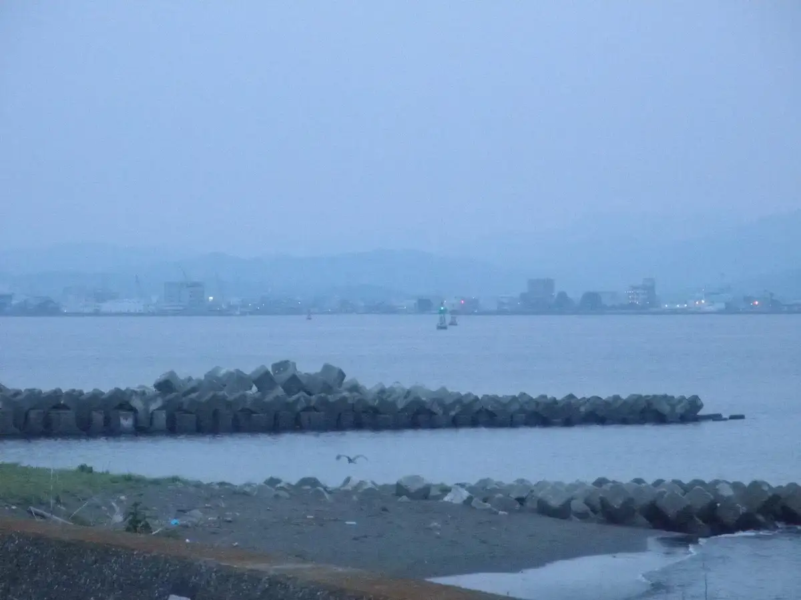
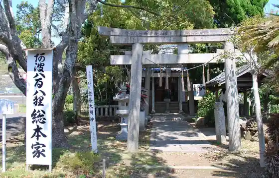
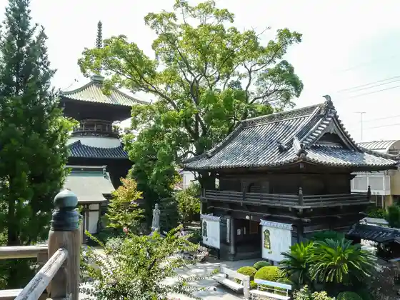
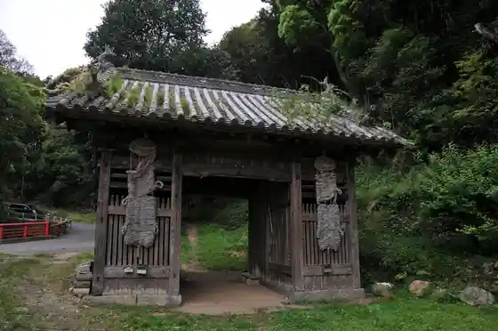
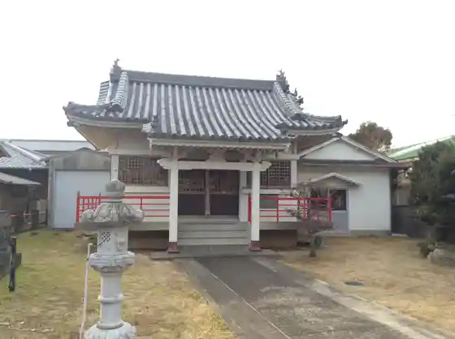

Japan / Tokushima / Komatsushima
Komatsushima
Komatsushima · Tokushima
Komatsushima
Highlighted on the Tokushima map.

Stay
Supa Hotel Toku Shima Komatsushima Tennen Onsen
HOTEL AZ Toku Shima Komatsushima Mise
Midori Ryokan
Resort Ryokan Nyu Miharashi
Onsen
Supa Hotel Toku Shima Komatsushima Tennen Onsen Kanenaga Baths
Experience
Komatsushima Suteshon Park
Sights
Ote Coast
Kanenaga Shrine

Tatsue Tera

On Yamadera

Toyokuni Shrine

More places (local open data)
Miharashi no Oka Aisai Plaza
Wada Shima Chirimen no Mise
Komatsushima Minato Koryu Center kocolo (Komatsushima Minato Oashisu)